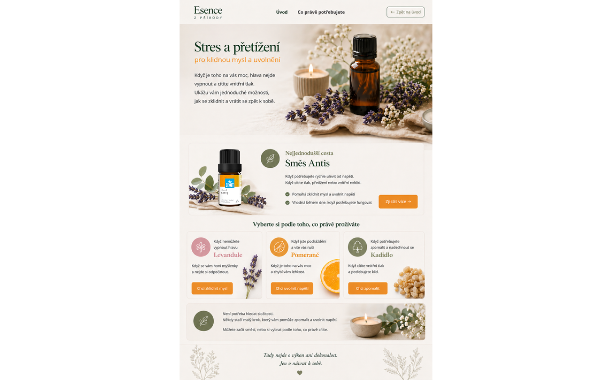

Zvládněte stres přirozeně
pro klidnější mysl a uvolnění
Moderní život nás zavaluje povinnostmi. Napětí v těle, závodící myšlenky, pocit vyčerpanosti — příroda má pro tyto chvíle připravená řešení. Jemná, účinná a bez vedlejších účinků.

Antis je jedinečná směs přírodních esencí speciálně sestavená pro chvíle, kdy vás stres a napětí přehltí. Obsahuje levanduli, bergamot a ylang-ylang — kombinaci, která pomáhá zklidnit mysl, uvolnit svalové napětí a navodit pocit vnitřního klidu. Stačí pár kapek do difuzéru nebo na zápěstí.
Stres je přirozená součást života — ale nemusí nás ovládat. Esence nám pomáhají najít moment zastavení, tichou chvíli pro sebe. Nejde o útěk od reality, ale o nalezení vnitřní opory, která nám pomáhá zvládat i ty nejtěžší dny s větší lehkostí.